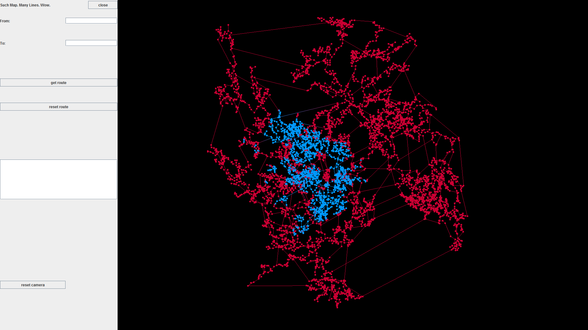
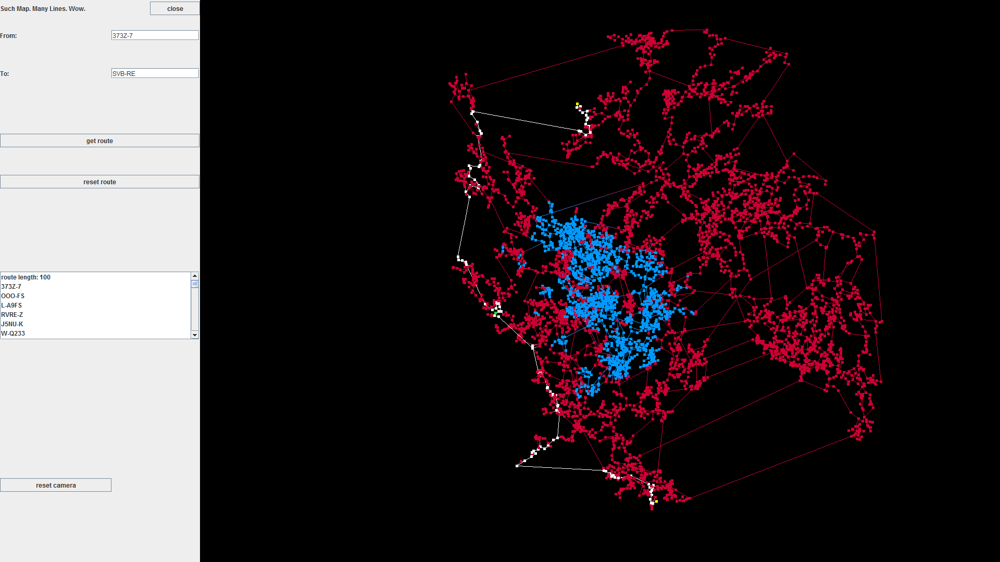
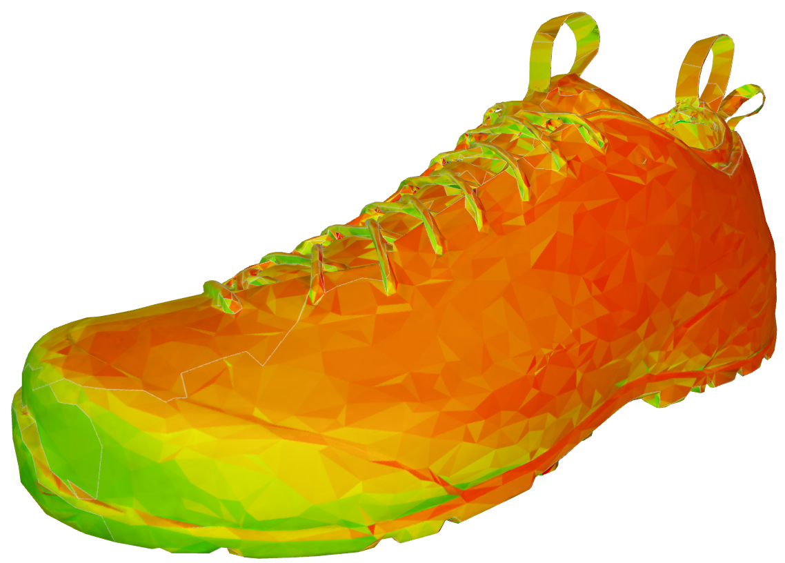

Programming Projects
I built 3D intractable viewer for a map from the game EVE: Online. I used an SQL database the game developers released in order to generate a graph of all the star systems and the connections between the star systems. Using this graph, I implemented a path finding algorithm that finds the shortest path between any two systems and displays it on the 3D map.


I built a C++ program that takes in a list of basic shapes and point lights and generates a color image based on their 3D locations and assigned colors. The program also uses the location and luminescence of point lights to cast shadows and determine the intensity of the color on each rendered object.
At Prizmiq I was given a project to build a server that takes in a 3D model and a list of points that the model was viewed at. With this data I used an AWS EC2 g2.2xlarge instance to calculate with OpenGL how much each triangle in the model was viewed. I then took this data and generated a heat map texture that when applied to the original model shows how much each part of the model was looked at.
